If you could change anything, what would you change? Would you go on vacation for the rest of your life? Make fossil fuels stop causing climate change? Ask for ethical banks and politicians? Surely nothing could be more unrealistic than to keep everything the way it is and expect different results.
Our private financial and emotional struggles mirror global upheaval and disaster. We could spend the rest of our days trying to douse these fires one by one, but they stem from the same source. No piecemeal solution will serve; we need to rethink everything according to a different logic.
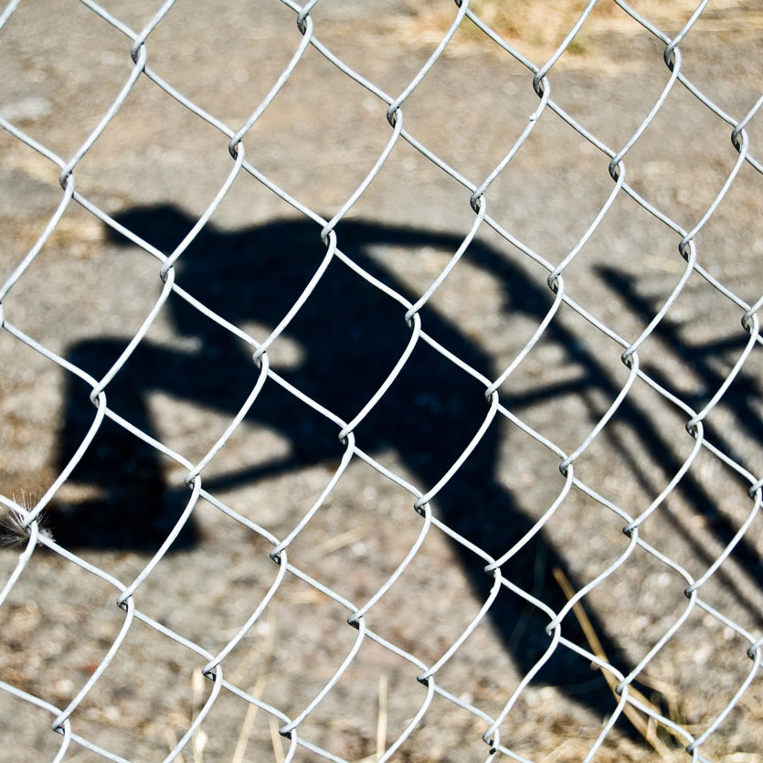
The phantom of liberty still haunts a world cast in its image. We have been promised complete self-determination: all the institutions of our society are supposed to deliver it.
If you had complete self-determination, what would you be doing right now? Think of the vast potential of your life: the relationships you could have, the things you could experience, all the ways you could give meaning to your existence. When you were born, it seemed there was no limit to what you could become. You represented pure possibility.
Usually, we don't stop to imagine any of this. Only in the most beautiful moments, when we fall in love or achieve a breakthrough or visit a faraway land, do we catch a dizzying glimpse of all our lives could be.
What limits how you can fulfill your potential? How much leverage do you have over the environment around you, or how you spend your time? The bureaucracies that appraise you according to how you follow instructions, the economy that empowers you according to how much profit you generate, the military recruiters who insist that the best way to "be all that you can be" is to submit to their authority---do these enable you to make the most of your life on your own terms?
The open secret is that we do all have complete self-determination: not because it's given to us, but because not even the most totalitarian dictatorship could take it away. Yet as soon as we begin to act for ourselves, we come into conflict with the very institutions that are supposed to secure our freedom.
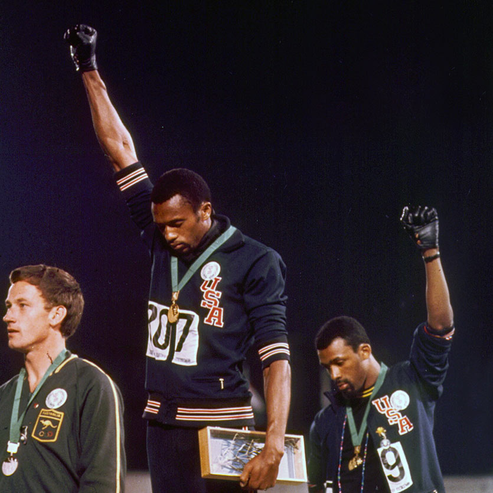
Managers and tax collectors love to talk about personal responsibility. But if we took complete responsibility for all our actions, would we be following their instructions in the first place?
More harm has been done throughout history by obedience than by malice. The arsenals of all the world's militaries are the physical manifestation of our willingness to defer to others. If you want to be sure you never contribute to war, genocide, or oppression, the first step is to stop following orders.
That goes for your values, too. Countless rulers and rulebooks demand your unquestioning submission. But even if you want to cede responsibility for your decisions to some god or dogma, how do you decide which one it will be? Like it or not, you are the one who has to choose between them. Usually, people simply make this choice according to what is most familiar or convenient.
We are inescapably responsible for our beliefs and decisions. Answering to ourselves rather than to commanders or commandments, we might still come into conflict with each other, but at least we would do so on our own terms, not needlessly heaping up tragedy in service of others' agendas.
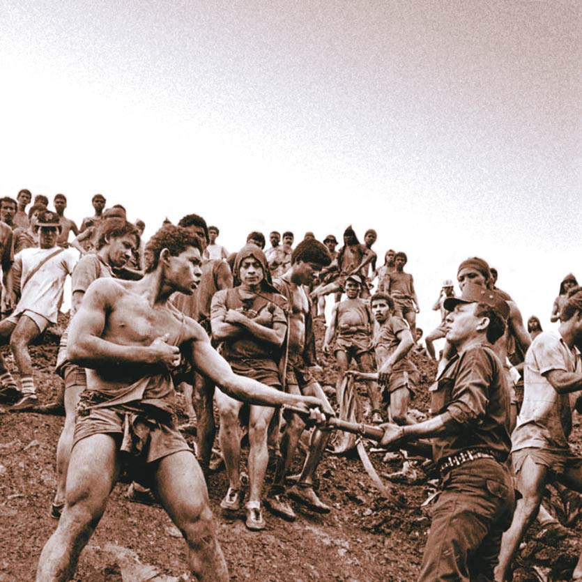
The workers who perform the labor have power; the bosses who tell them what to do have authority. The tenants who maintain the building have power; the landlord whose name is on the deed has authority. A river has power; a permit to build a dam grants authority.
There's nothing oppressive about power per se. Many kinds of power can be liberating: the power to care for those you love, to defend yourself and resolve disputes, to perform acupuncture and steer a sailboat and swing on a trapeze. There are ways to develop your capabilities that increase others' freedom as well. Every person who acts to achieve her full potential offers a gift to all.
Authority over others, on the other hand, usurps their power. And what you take from them, others will take from you. Authority is always derived from above:
The soldier obeys the general, who answers to the president, who derives his authority from the Constitution---
The priest answers to the bishop, the bishop to the pope, the pope to scripture, which derives its authority from God---
The employee answers to the owner, who serves the customer, whose authority is derived from the dollar---
The police officer executes the warrant signed by the magistrate, who derives authority from the law---
Manhood, whiteness, property---at the tops of all these pyramids, we don't even find despots, just social constructs: ghosts hypnotizing humanity.
In this society, power and authority are so interlinked that we can barely distinguish them: we can only obtain power in return for obedience. And yet without freedom, power is worthless.
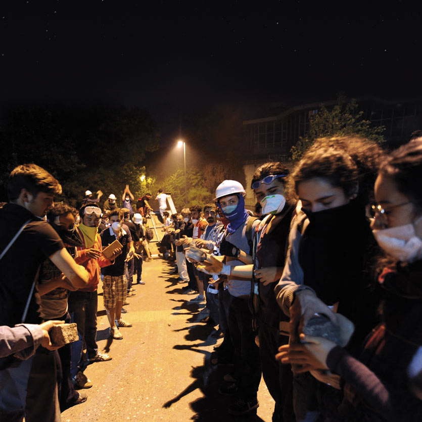
In contrast to authority, trust centers power in the hands of those who confer it, not those who receive it. A person who has earned trust doesn't need authority. If someone doesn't deserve trust, he certainly shouldn't be invested with authority! And yet whom do we trust less than politicians and CEOs?
Without imposed power imbalances, people have an incentive to work out conflicts to their mutual satisfaction---to earn each other's trust. Hierarchy removes this incentive, enabling those who hold authority to suppress conflicts.
At its best, friendship is a bond between equals who support and challenge each other while respecting each other's autonomy. That's a pretty good standard by which to evaluate all our relationships. Without the constraints that are imposed upon us today---citizenship and illegality, property and debt, corporate and military chains of command---we could reconstruct our relations on the basis of free association and mutual aid.
"Your rights end where another's rights begin." According to that logic, the more people there are, the less freedom.
But freedom is not a tiny bubble of personal rights. We cannot be distinguished from each other so easily. Yawning and laughter are contagious; so are enthusiasm and despair. I am composed of the clichés that roll off my tongue, the songs that catch in my head, the moods I contract from my companions. When I drive a car, it releases pollution into the atmosphere you breathe; when you use pharmaceuticals, they filter into the water everyone drinks. The system everyone else accepts is the one you have to live under---but when other people challenge it, you get a chance to renegotiate your reality as well. Your freedom begins where mine begins, and ends where mine ends.
We are not discrete individuals. Our bodies are comprised of thousands of different species living in symbiosis: rather than closed fortresses, they are ongoing processes through which nutrients and microbes ceaselessly pass. We live in symbiosis with thousands more species, cornfields inhaling what we exhale. A swarming pack of wolves or an evening murmuring with frogs is as individual, as unitary, as any one of our bodies. We do not act in a vacuum, self-propelled by reason; the tides of the cosmos surge through us.
Language serves to communicate only because we hold it in common. The same goes for ideas and desires: we can communicate them because they are greater than us. Each of us is composed of a chaos of contrary forces, all of which extend beyond us through time and space. In choosing which of these to cultivate, we determine what we will foster in everyone we encounter.
Freedom is not a possession or a property; it is a relation. It is not a matter of being protected from the outside world, but of intersecting in a way that maximizes the possibilities. That doesn't mean we have to seek consensus for its own sake; both conflict and consensus can expand and ennoble us, so long as no centralized power is able to compel agreement or transform conflict into winner-takes-all competition. But rather than breaking the world into tiny fiefdoms, let's make the most of our interconnection.
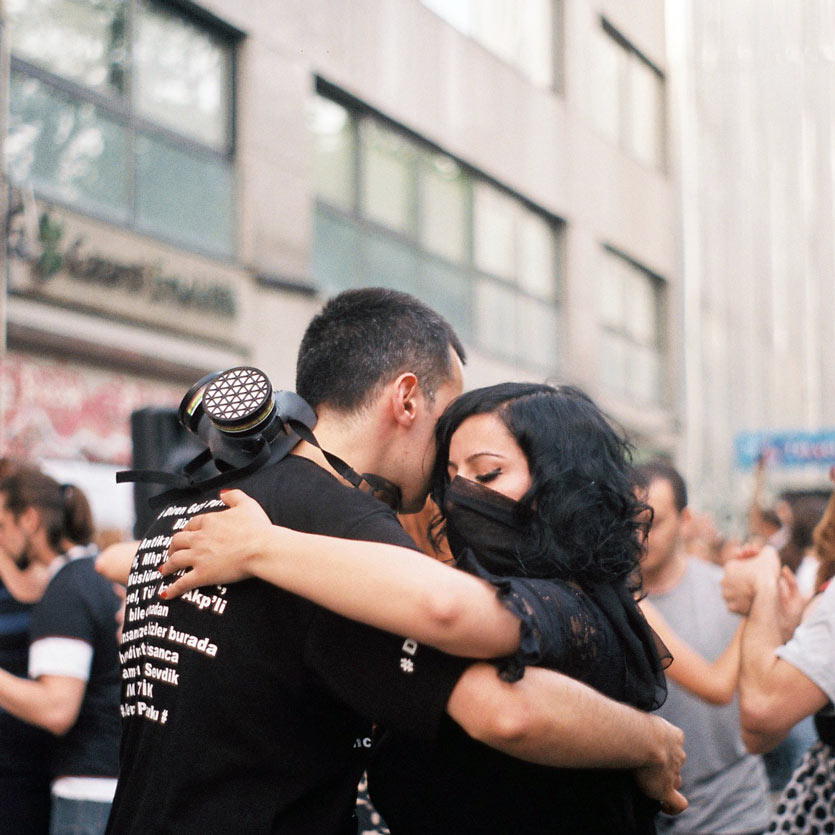
Growing up in this society, not even our passions are our own; they are cultivated by advertising and other forms of propaganda to keep us running on the treadmills of the marketplace. Thanks to indoctrination, people can be quite pleased with themselves for doing things that are bound to make them miserable in the long run. We are locked into our suffering and our pleasures are the seal.
To be truly free, we need leverage over the processes that produce our desires. Liberation doesn't just mean fulfilling the desires we have today, but expanding our sense of what is possible, so our desires can shift along with the realities they drive us to create. It means turning away from the pleasure we take in enforcing, dominating, and possessing, to seek pleasures that wrench us free of the machinery of obedience and competition. If you've ever broken an addiction, you have a taste of what it means to transform your desires.
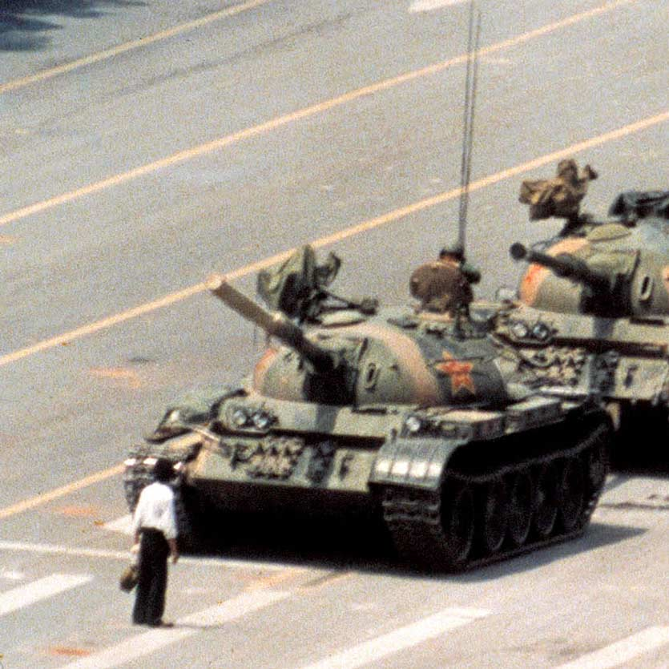
Bigots typically blame a specific group for a systemic problem---Jews for profit-driven capitalism, immigrants for economic recession---the same way people blame individual politicians for the corruption of politics. But the problem is the systems themselves. No matter who holds the reins, they produce the same power imbalances and petty indignities. The problem is not that they are broken, but that they are functioning in the first place.
Our enemies are not human beings, but the institutions and routines that estrange us from each other and from ourselves. There are more conflicts within us than between us. The same fault lines that run through our civilization run through our friendships and our hearts; this is not a clash between people, but between different kinds of relations, different ways of living. When we refuse our roles in the prevailing order, we open up those fault lines, inviting others to take a stand as well.
The best thing would be to do away with domination entirely---not to manage its details more fairly, not to shuffle the positions of who inflicts and who endures, not to stabilize the system by reforming it. The point of protest is not to call for more legitimate rules or rulers, but to demonstrate that we can act on our own strength, encouraging others to do the same and discouraging the authorities from interfering. This is not a question of war---a binary conflict between militarized enemies---but rather of contagious disobedience.
It is not enough only to educate and discuss, waiting for others' hearts and minds to change. Until ideas are expressed in action, confronting people with concrete choices, the conversation remains abstract. Most people tend to remain aloof from theoretical discussions, but when something is happening, when the stakes are high and they can see meaningful differences between opposing sides, they will take a stand. We don't need unanimity, nor a comprehensive understanding of the whole world, nor a road map to a precise destination---just the courage to set out on a different path.
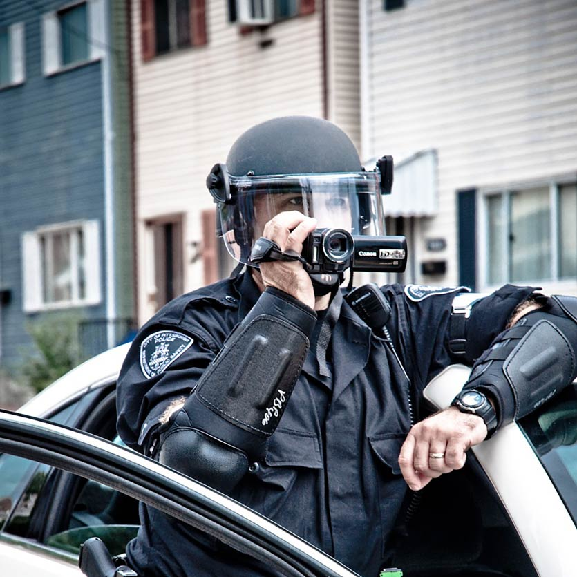
What are the signs that you are in an abusive relationship? The abuser may try to control your behavior or dictate your thoughts; block or regulate your access to resources; use threats or violence against you; or keep you in a position of dependence, under constant surveillance.
This describes the behavior of individual abusers, but it also goes for the IRS, the NSA, and most of the other institutions governing our society. Practically all of them are based on the idea that human beings need to be policed, to be managed, to be administered.
The greater the imbalances that are imposed on us, the more control it takes to preserve them. At one end of the power continuum, control is exercised brutally on an individual basis: drone strikes, SWAT teams, solitary confinement, racial profiling. At the other end, it is omnipresent and invisible, built into the infrastructure of society: the equations that determine credit ratings and insurance premiums, the ways statistics are collected and turned into urban planning, the architecture of dating sites and social media platforms. The NSA monitors what we do online, but it doesn't wield as much control over our reality as the algorithms that determine what we see when we log in.
When the infinite possibilities of life have been reduced to an array of options coded in ones and zeros, there will be no more friction between the system we inhabit and the lives we can imagine---not because we will have achieved total freedom, but because we will have perfected its opposite. Freedom doesn't mean choosing between options, but formulating the questions.
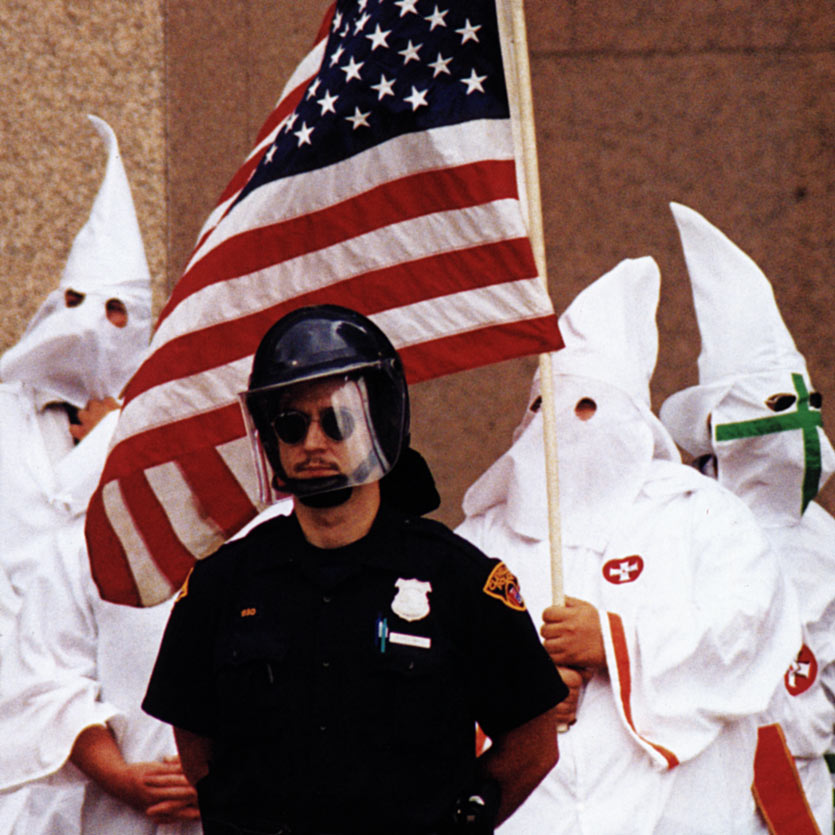
There are many different mechanisms for imposing inequality. Some depend on a centralized apparatus, like the court system. Others can function more informally, like good ol' boy networks and gender roles.
Some of these mechanisms have been almost completely discredited. Few still believe in the divine right of kings, though for centuries no other basis for society was even thinkable. Others are still so deeply ingrained that we cannot imagine life without them. Who can picture a world without property rights? Yet all of these are social constructs: they are real, but not inevitable. The existence of landlords and CEOs is no more natural, necessary, or beneficial than the existence of emperors.
All of these mechanisms developed together, reinforcing each other. The history of racism, for example, is inextricable from the history of capitalism: neither one is conceivable without colonization, slavery, or the color lines that divided workers and still determine who fills the world's prisons and shantytowns. Likewise, without the infrastructure of the state and the other hierarchies of our society, individual bigotry could never enforce systemic white supremacy. That a Black President can preside over these structures only stabilizes them: it is the exception that justifies the rule.
To put it another way: as long as there are police, who do you think they will harass? As long as there are prisons, who do you think will fill them? As long as there is poverty, who do you think will be poor? It is naïve to believe we could achieve equality in a society based on hierarchy. You can shuffle the cards, but it's still the same deck.
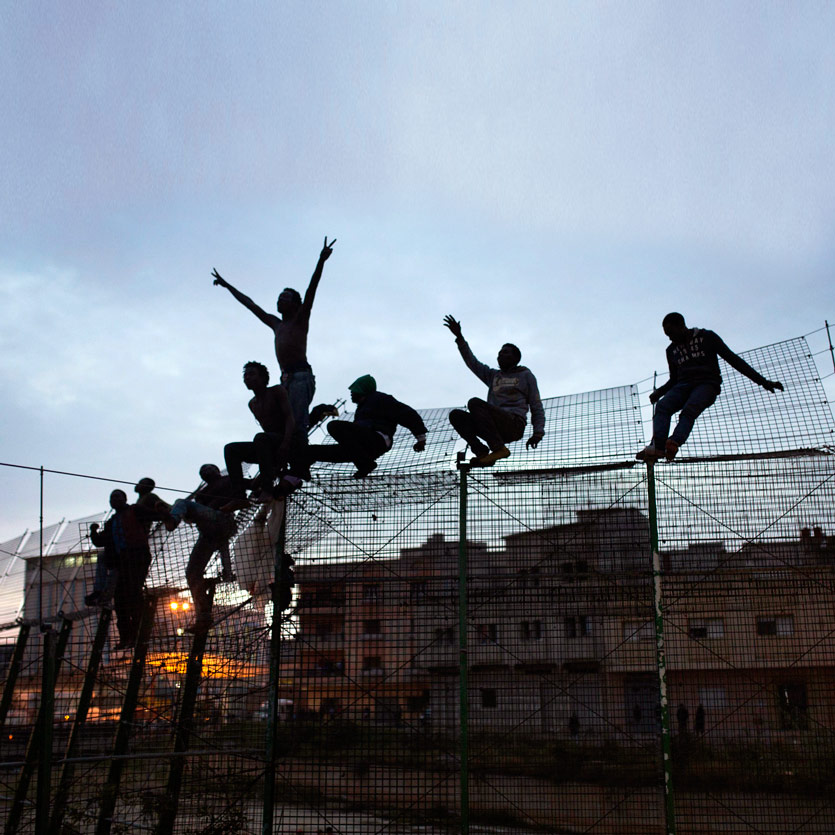
If a foreign army invaded this land, cut down the trees, poisoned the rivers, and forced children to grow up pledging allegiance to them, who wouldn't take up arms against them? But when the local government does the same, patriots readily render their obedience, tax dollars, and children.
Borders don't protect us, they divide us---creating needless friction with the excluded while obscuring real differences among the included. Even the most democratic government is founded upon this division between participants and outsiders, legitimate and illegitimate. In ancient Athens, the famed birthplace of democracy, only a fraction of the men were included in the political process; the Founding Fathers of modern-day democracy owned slaves. Citizenship still imposes a barrier between included and excluded inside the US, stripping millions of undocumented residents of leverage over their lives.
The liberal ideal is to expand the lines of inclusion until all the world is integrated into one vast democratic project. But inequality is coded into the structure itself. At every level of this society, a thousand tiny borders divide us into powerful and powerless: security checkpoints, credit ratings, database passwords, price brackets. We need forms of belonging that are not predicated on exclusion, that do not centralize power and legitimacy, that do not quarantine empathy to gated communities.
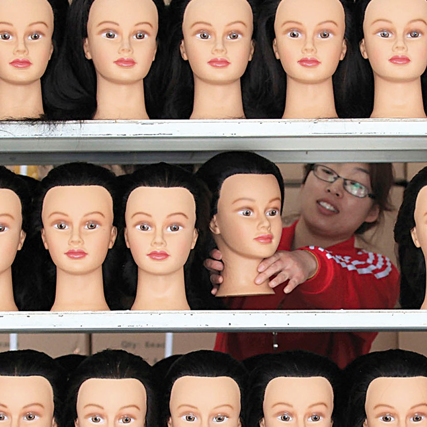
You can only have power by wielding it; you can only learn what your interests are by acting on them. When every effort to exert leverage on the world must be channeled through the mediation of representatives or translated into the protocol of institutions, we become alienated from each other and our own potential. Every aspect of our agency that we yield reappears as something unrecognizable and hostile to us. The politicians who always disappoint us only show how much power we have given up over our own lives; the violence of the police is the dark consequence of our desire to avoid personal responsibility for what happens in our neighborhoods.
In the digital age, when every person must continually serve as his own secretary to manage his public image, our very reputations have become external, like vampires feeding on us. If we weren't isolated from each other, competing to sell ourselves on so many professional and social markets, would we invest so much time and energy in these profiles, golden calves made in our own image?
We are irreducible. Neither delegates nor abstractions can stand in for us. In reducing human beings to demographics and raw experience to data, we lose sight of everything that is precious and unique in the world. We need presence, immediacy, direct contact with each other, direct control over our lives---things no representative or representation can deliver.
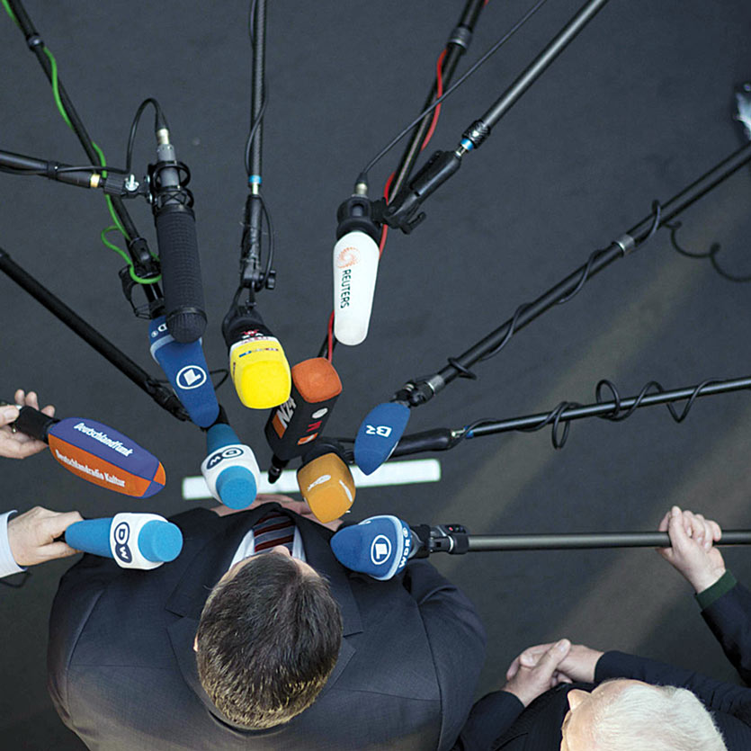
Leadership is a social disorder in which the majority of participants in a group fail to take initiative or think critically about their actions. As long as we understand agency as a property of specific individuals rather than a relationship between people, we will always be dependent on leaders---and at their mercy. Truly exemplary leaders are as dangerous as the obviously corrupt, in that all their praiseworthy qualities only reinforce their status and others' deference, not to mention the legitimacy of leadership itself.
When the police arrive at a protest, their first question is always "Who's in charge?"---not because leadership is essential to collective action, but because it presents a vulnerability. The Conquistadores asked the same question when they arrived in the so-called New World; wherever there was an answer, it saved them centuries of trouble subduing the population themselves. So long as there is a leader, he can be deputized, replaced, or taken hostage. At best, depending on leaders is an Achilles heel; at worst, it reproduces the authorities' interests and power structure inside those who oppose them. It's better if everyone has her own agenda and a sense of her own agency.
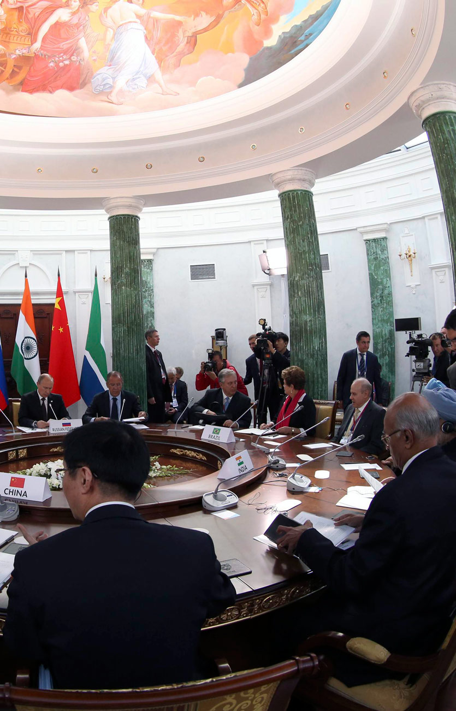
Governments promise rights, but they can only take liberties. The idea of rights implies a central power to grant and guard them. Yet anything the state is powerful enough to guarantee, it is powerful enough to take away; empowering government to solve one problem only opens the door for it to create more problems. And governments do not generate power out of thin air---that's our power that they wield, which we can employ far more effectively without the Rube Goldberg machine of representation.
The most liberal democracy shares the same principle as the most despotic autocracy: the centralization of power and legitimacy in a structure intended to monopolize the use of force. Whether the bureaucrats who operate this structure answer to a king, a president, or an electorate is beside the point. Laws, bureaucracy, and police are older than democracy; they function the same way in a democracy as in a dictatorship. The only difference is that, because we can vote about who administers them, we're supposed to regard them as ours---even when they're used against us.
Dictatorships are inherently unstable: you can slaughter, imprison, and brainwash entire generations and their children will invent the struggle for freedom anew. But promise every man a chance to impose the will of the majority upon his fellows, and you can get them all together behind a system that pits them against each other. The more influence people think they have over the coercive institutions of the state, the more popular those institutions can be. Perhaps this explains why the global expansion of democracy coincides with incredible inequalities in the distribution of resources and power: no other system of government could stabilize such a precarious situation.
When power is centralized, people have to attain dominion over others to gain any influence over their own destinies. Struggles for autonomy are channeled into contests for political power: witness the civil wars in postcolonial nations between peoples who previously coexisted peacefully. Those who hold power can only retain it by waging perpetual war against their own populations as well as foreign peoples: the National Guard is brought back from Iraq to be deployed in Oakland.
Wherever there are hierarchies, it favors the ones on top to centralize power. Building more checks and balances into the system just means relying on the thing we need to be protected from for protection. The only way to exert leverage on the authorities without being sucked into their game is to develop horizontal networks that can act autonomously. Yet when we're powerful enough to force the authorities to take us seriously, we'll be powerful enough to solve our problems without them.
There's no way to freedom but through freedom. Rather than a single bottleneck for all agency, we need a wide range of venues in which to exercise power. Rather than a singular currency of legitimacy, we need space for multiple narratives. In place of the coercion inherent in government, we need decision-making structures that promote autonomy, and practices of self-defense that can hold would-be rulers at bay.
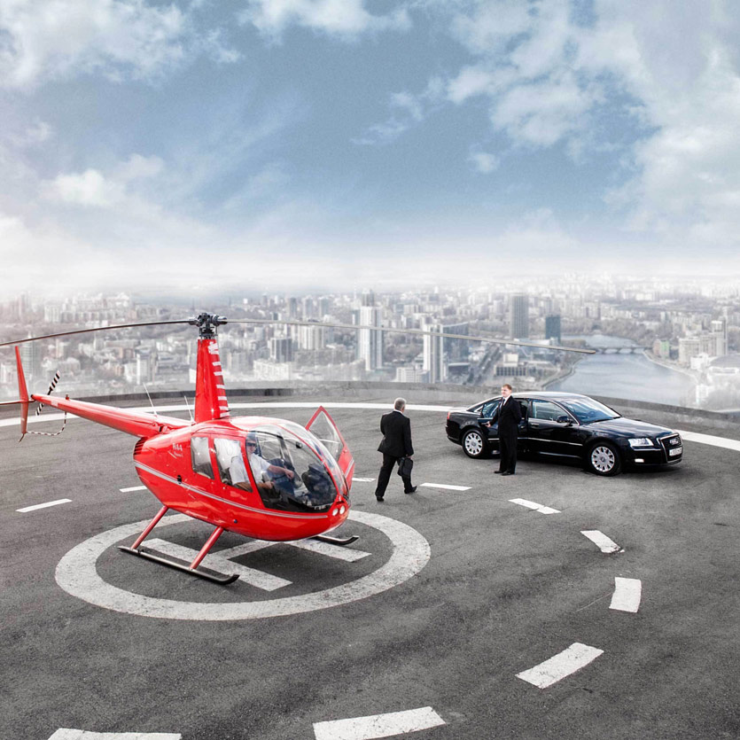
Money is the ideal mechanism for implementing inequality. It is abstract: it seems to be able to represent everything. It is universal: people who have nothing else in common accept it as a fact of life. It is impersonal: unlike hereditary privileges, it can be transferred instantly from one person to another. It is fluid: the easier it is to change position in a hierarchy, the more stable the hierarchy itself is. Many who would revolt against a dictator readily accept the authority of the market.
When all value is concentrated into a single instrument, even the irrecoverable moments of our lives are drained of meaning, becoming tokens in an abstract calculus of power. Everything that cannot be financially quantified falls by the wayside. Life becomes a scramble for financial gain: each against all, sell or be sold.
To make a profit: that means to gain more control over the resources of society relative to everyone else. We can't all profit at once; for one person to profit, others have to lose leverage, proportionately speaking. When investors profit on employees' labor, that means the more the employees work, the wider the financial gap between them becomes.
A system driven by profit produces poverty at the same pace as it concentrates wealth. The pressure to compete generates innovations faster than any previous system, but alongside them it produces ever-increasing disparities: where equestrians once ruled over pedestrians, stealth bombers now sail over motorists and homeless people. And because everyone has to pursue profit rather than accomplishing things for their own sake, the results of all this labor can be disastrous. Climate change is just the latest in a series of catastrophes that even the most powerful capitalists have been powerless to halt. Indeed, capitalism doesn't reward entrepreneurs for remedying crises, but for cashing in on them.
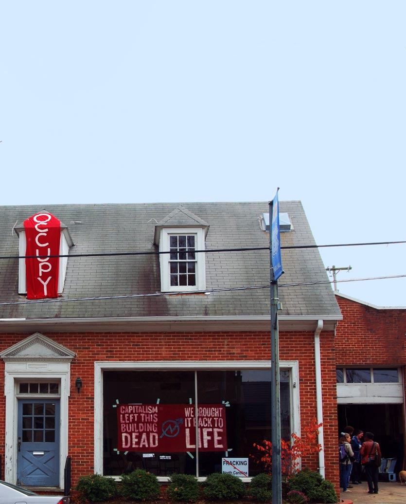
The foundation of capitalism is property rights---another social construct we inherited from kings and aristocrats. Property shifts hands more rapidly today, but the concept is the same: the idea of ownership legitimizes the use of violence to enforce artificial imbalances in access to land and resources.
Some people imagine that property could exist without the state. But property rights are meaningless without a centralized authority to impose them---and as long as a centralized authority exists, nothing is truly yours, either. The money you make is minted by the state, subject to tax and inflation. The title for your car is controlled by the DMV. Your house doesn't belong to you, but to the bank that gave you the mortgage; even if you own it outright, eminent domain trumps any deed.
What would it take to protect the things that are important to us? Governments only exist by virtue of what they take from us; they will always take more than they give. Markets only reward us for fleecing our fellows, and others for fleecing us. The only real insurance is in our social ties: if we want to be sure of our security, we need mutual aid networks that can defend themselves.
Without money or property rights, our relationships to things would be determined by our relationships with each other. Today, it is just the other way around: our relationships with each other are determined by our relationships to things. Doing away with property wouldn't mean you would lose your belongings; it would mean that no sheriff or stock market crash could take away the things you depend on. Instead of answering to bureaucracy, we would begin from human needs; instead of taking advantage of each other, we would pursue the advantages of interdependence.
A scoundrel's worst fear is a society without property---for without it, he will only get the respect he deserves. Without money, people are valued for what they contribute to others' lives, not for what they can bribe others to do. Without profit, every effort must be its own reward, so there is no incentive for meaningless or destructive activity. The things that really matter in life---passion, camaraderie, generosity---are available in abundance. It takes legions of police and property surveyors to impose the scarcity that traps us in this rat race.
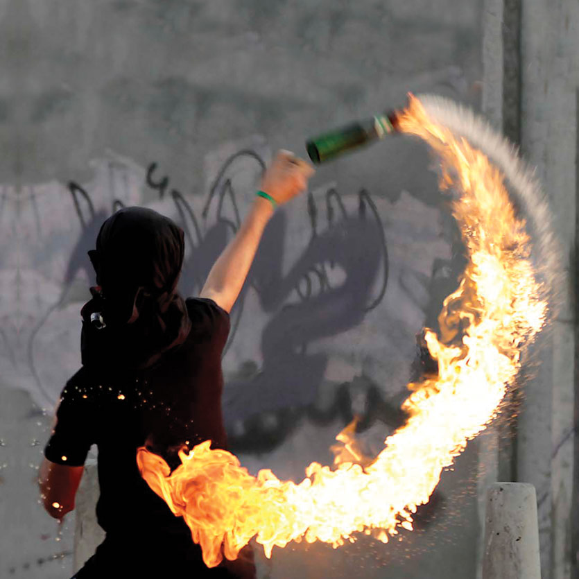
Every order is founded on a crime against the preceding order---the crime that dissolved it. Afterwards, the new order comes to be perceived as legitimate, as people begin to take it for granted. The founding crime of the United States of America was the rebellion against the authority of the king of England. The founding crime of the society to come, if we manage to survive this one, will do away with the laws and institutions of today.
The category of crime holds everything that exceeds the limits of a society---its worst and its best. Every system is haunted by all that it cannot incorporate or control. Every order contains the seeds of its own destruction.
Nothing lasts forever; that goes for empires and civilizations too. But what could supersede this one? Can we imagine an order not premised on the division of life into legitimate and illegitimate, legality and criminality, rulers and ruled? What could be the last crime?
Anarchy is what happens wherever order is not imposed by force. It is freedom: the process of continually reinventing ourselves and our relationships.
Any freely occurring process or phenomenon---a rainforest, a circle of friends, your own body---is an anarchic harmony that persists through constant change. Top-down control, on the other hand, can only be maintained by constraint or coercion: the precarious discipline of the high-school detention room, the factory farm in which pesticides and herbicides defend sterile rows of genetically modified corn, the fragile hegemony of a superpower.
Anarchism is the idea that everyone is entitled to complete self-determination. No law, government, or decision-making process is more important than the needs and desires of actual human beings. People should be free to shape their relations to their mutual satisfaction, and to stand up for themselves as they see fit.
Anarchism is not a dogma or a blueprint. It is not a system that would supposedly work if only it were applied right, like democracy, nor a goal to be realized in some far-off future, like communism. It is a way of acting and relating that we can put into practice right now. In reference to any value system or course of action, we can begin by asking: How does it distribute power?
Anarchists oppose all forms of hierarchy---every currency that concentrates power into the hands of a few, every mechanism that puts us at a distance from our potential. Against closed systems, we relish the unknown before us, the chaos within us by virtue of which we are able to be free.
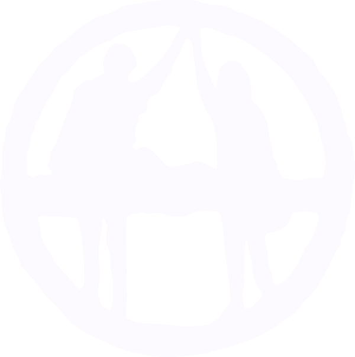
When we see what all the different institutions and mechanisms of domination have in common, it becomes clear that our individual struggles are also part of something greater than us, something that could connect us. When we come together on the basis of this connection, everything changes: not only our struggles, but also our sense of agency, our capacity for joy, the sense that our lives have meaning. All it takes to find each other is to begin acting according to a different logic.